Group Chief Executive Officer, Sri Lanka Telecom PLC
Mr Dileepa Wijesundera is an engineer with extensive experience in project logistics, profitability and restructuring both at private and Government institutions. He holds a BSc in Civil Engineering and a MSc in Management from the Loughborough University (UK). He has held leadership positions in several prestigious organisations including Head of Emirates Sky Cargo, Canada, Senior Vice-President – Qatar Airways, Chairman – Sri Lanka Ports Authority amongst others. Mr Wijesundera assumed duties as the Group CEO of SLT on 9 March 2015.
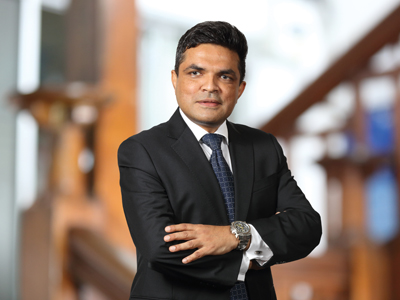Chief Planning Officer
Mr Herath is a Chartered Engineer with a Degree in Engineering from the University of Moratuwa and a Master’s Degree in Industrial Mathematics from the University of Sri Jayewardenepura. In his career at SLT spanning over 31 years, he has gained multi-disciplinary exposure in the fields of Engineering, Management, Regulation and Business. He has previously held a number of senior positions, including, Deputy General Manager, Head of Province and General Manager of Regulatory Affairs and International Business. Mr Herath has gained extensive training by reputed international operators, including Telia AB of Sweden, France Telecom, AT&T of USA and KDD of Japan. He has also gained certifications in Telecommunication Regulation from the Commonwealth Telecommunications Organisation (CTO), Australian Communication and Media Authority (ACMA) and University of Florida. He has also been involved in the activities of ITU study groups, Sri Lanka Association for the Advancement of Science (SLAAS) and International Development Research Centre (IDRC), with several research papers and a book chapter to his credit. Mr Herath is currently heading the Planning Group of SLT which is being developed as a centre of excellence in strategy and planning for both network and information technology of the Company.
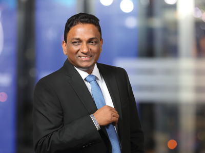Chief Enterprise and Wholesale Officer
Mr Perera joined SLT in 1994. He holds a MEng from University of Moratuwa in Electronics and Telecommunications Engineering and is a Chartered Engineer of the Institute of Electrical Engineers and Engineering Council (UK). He has extensive experience in International Transmission Systems, Submarine Cable Systems, Data and IP Networking and Project Management. He counts over 12 years of experience in the enterprise and Government customer segments. In addition, he was instrumental in introducing Metro Ethernet Technology to Sri Lanka. Mr Perera has provided voice-data integrated enterprise solutions connected with high speed resilient connectivity services to many customers.
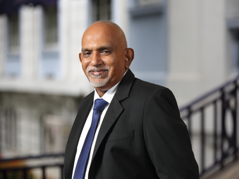Chief Corporate Officer and Chief Sales Officer
Mr Ranjith joined SLT in 1984 as an Engineer. He holds a BSc in Electronics and Communication from the University of Moratuwa and an MBA from the Postgraduate Institute of Management of the University of Sri Jayewardenepura. In addition to the Postgraduate Diploma in Marketing from the CIM (UK), he is a Chartered Engineer cum Chartered Marketer with memberships in the Institution of Engineers, Sri Lanka and CIM (UK). He is a Toastmaster as well.
His professional commitments encompass a wide spectrum including Business and Strategic Planning, Investment Governance, Regulatory Concerns, Knowledge Management and Enterprise Risk Management to name a few. He played a catalytic role in introducing new business concepts to SLT such as 5S, Workplace Cooperation, Break-Through Thinking (BTT) and Change Management. After assuming the additional role of Chief Sales Officer, he was responsible for Consumer and SME sales of the Company.
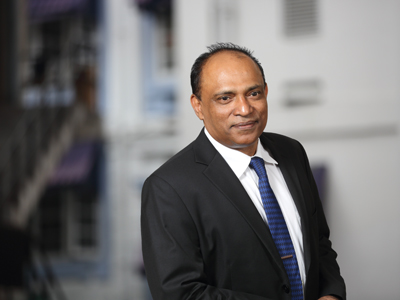Chief Regional Officer
Mr Wijesuriya joined SLT in 1984 and served as Regional Head in 2001 prior to his appointment as Chief Regional Officer of SLT in 2010. He obtained Graduate membership of Radio and Electronic Engineers (London, UK) and became a Chartered Engineer of the Institution of Electrical Engineers (London, UK). He is a Member of the Association of Professional Engineers Scientists and Managers Associations in Australia and holds an MBA (Technical Management) from La Trobe University of Australia. He has a wide experience in the telecommunications industry, in areas such as Operations, Maintenance, Sales, Marketing, Customer Service, Quality Management and Project Management.
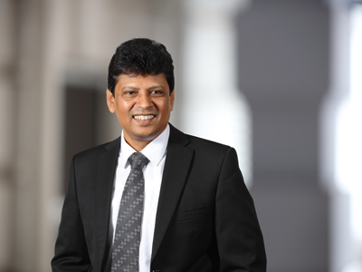Chief Marketing Officer
Mr Seneviratne joined SLT in 1993. He holds a BSc in Electronics and Telecommunications from the University of Moratuwa and a Postgraduate Diploma in Industrial Engineering from OUSL. In addition, he holds an MBA from the University of Sri Jayewardenepura. He is a Chartered Engineer and a member of the Institution of Engineers, Sri Lanka as well. He counts over 10 years of experience in marketing. He is also the Chief Executive Officer of SLT VisionCom (Private) Limited.
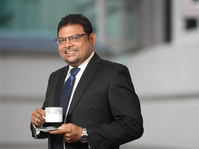Chief Network Officer
Mr Fernandez joined SLT in 1991. He holds a BSc Eng. in Electronics and Telecommunications from the University of Moratuwa and an MBA from the University of Sri Jayewardenepura. He is a Chartered Engineer and a Fellow of the Institute of Engineers, Sri Lanka. Mr Fernandez counts over 27 years of experience in Operations, Maintenance, Project Management, Customer Service and Marketing in telecom-related networks and businesses. He also serves as Director of Sri Lanka Telecom (Services) Limited since 2007. Mr Fernandez was a resource person in many telecom and management-related institutes such as TTI and IPM.
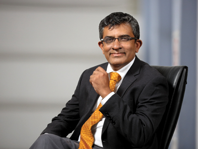Chief Financial Officer
Mr Samararatne is a Member of the Association of Chartered Certified Accountants, UK and the Chartered Institute of Management Accountants, UK. He has over 25 years of extensive experience in finance having worked in both local and international companies such as Richard Pieris PLC, Lanka Ashok Leyland PLC, Noritake Limited of Japan, Ferrero Limited and Ceat Kelani Holdings Limited. Prior to joining SLT, he was the Group General Manager – Finance of Ceat Kelani Holdings Limited group of companies.
Chief Information Officer
Mr Wijeweera joined SLT in 1982. He was appointed Head of the Billing Division in 2001 and thereafter CIO of SLT in 2005. He is a member of the Institution of Engineers, Sri Lanka, IIESL, IET (UK) and CSSL. He has been involved in mega IT projects providing the strategic IT road map for SLT. As the Programme Manager, Mr Wijeweera implemented the Integrated OSS and BSS which was later integrated with the CRM system.
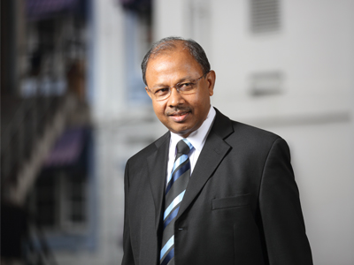Chief Logistics Officer
Mr Perera joined SLT in 1982. He holds a Bachelor of Science in Engineering Degree in Electronics and Telecommunications from the University of Moratuwa. He is a Chartered Engineer with a Postgraduate Diploma in Marketing from the CIM (UK). In addition, he is a Fellow and a Past Council Member of the Institution of Engineers, Sri Lanka, a member of IET (UK) and CIM (UK) and a competent Toastmaster as well.
He has extensive experience in numerous areas of operations including, regional management, project management, marketing management, administration and supply chain management to name a few. He has successfully led cross-functional teams on special assignments such as productivity improvement, 5S and breakthrough thinking.
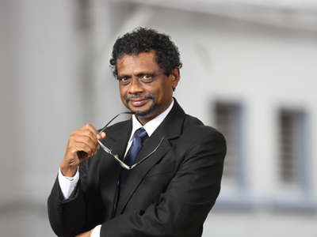Chief Business Innovation and Development Officer
Mr De Silva joined SLT in 1984 and counts over 30 years of experience in IT and Communication. He was a pioneer in transforming SLT to an IT enabled company. He has gained multidisciplinary exposure in the fields of engineering, information technology and global telecom business. Mr De Silva has held key positions including Head of IT, Chief Global Officer, Chief Network Officer and Advisor to CEO on Technology Strategies at SLT. He has also held the position of CEO, SLT Hong Kong which was a subsidiary of SLT.
Mr De Silva holds a Bachelor of Science Degree in Engineering (Specialising in Electronics and Telecommunications Engineering) from the University of Moratuwa and a Master of Science Degree in Data Communication from Brunel University, UK. He is a Chartered Engineer and a Chartered IT Professional. In addition, he was the president of Institution of Engineers, Sri Lanka (IESL) in year 2013 and has gained professional memberships in FIE (SL), FIET (UK), FBCS (UK) and MIEEE (USA).
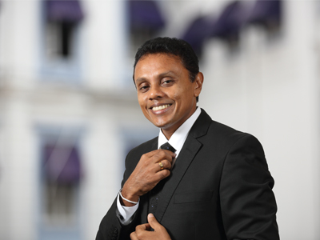Chief Business Strategies Officer (Subsidiaries)
Mr Kaluarachchi joined SLT in 2010 as Chief Marketing Officer. He holds a Postgraduate Diploma in Marketing – CIM UK and a Master’s Degree in Business Studies from the University of Colombo. He is also a Fellow of the Chartered Institute of Marketing (FCIM), a member of the Sri Lanka Institute of Marketing (MSLIM) and a member of the Advisory Board of CMO Council, Asia Pacific Region.
In addition to his position as a Board Director of CIM Sri Lanka, he was appointed as a Judge at the SLIM Brand Excellence Awards in 2013 and 2015. He counts over 22 years of experience in Marketing, Sales Management and Strategic Business Management in both multinational and blue chip companies in Sri Lanka. In addition, he has cross industry experience in FMCG, consumer durables, and telecommunications in both fixed and mobile categories in Sri Lanka. He was the Chief Marketing Officer (CMO) at SLT from November 2010 to March 2015. He is responsible for the entire business and marketing strategies and operations of the subsidiaries of SLT. He is also the Chief Executive Officer of SLT Human Capital Solutions (Private) Limited.
Prior to joining SLT, he served as General Manager – Marketing at Mobitel where his strategic marketing leadership enabled Mobitel to become the second largest mobile operator within a short span of 3 years. Currently, he is reading for PhD in Management and Business Studies at the University of Colombo.
Chief Human Resources Officer
Ms Hissalle, joined SLT in 1993 and holds a BSc in Electronic & Electrical Engineering and MSc in Telecommunications Engineering from University of Peradeniya. She is a Fellow of Institution of Engineers Sri Lanka and a Past President of IESL Provincial Centre. In addition, she is a Member of Institute of Electrical & Electronic Engineering, IEEE (USA) and currently holds the position of President of Microwave Theory & Techniques Society (Sri Lankan Chapter).
She has extensive expertise in Regional Operations, Project Management, Training, Contact Centre business including Administration. She has been engaged with employee relationship activities by heading disciplinary committees, Governance Board and Company Dress Code Committee for last 6 years. She has been the President of SLT Netball Association from its inception.
Ms Hissalle is a reputed speaker at IQPC International Quality & Productivity Centre and a visiting lecturer of University of Peradeniya. She is a reputed member of the International Rotary Club and is currently the District Attendance Committee Chairperson. She is reading for her PhD at the University of Peradeniya.
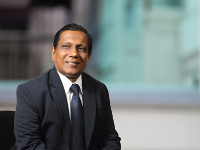Chief Transformation and Development Officer
Mr Padmaperuma joined SLT as an Engineer in 1984. He holds a BSc in Electronics and Telecommunications from University of Moratuwa. He is a Chartered Engineer and a Fellow of the Institution of Engineers, Sri Lanka. He gained experience at Emirates Telecommunication Company from 1989-1991.